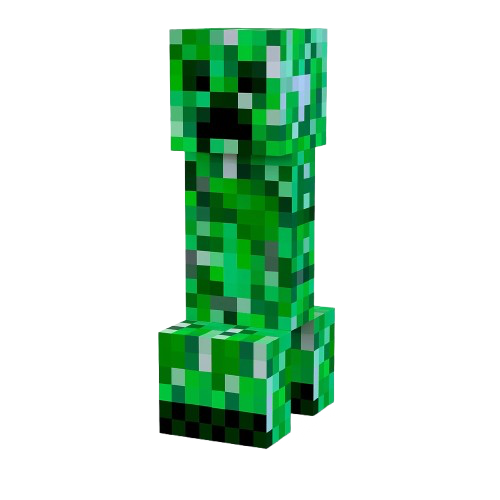
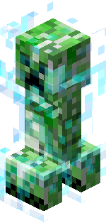

Spawn: Überall ab Lichtstuffe 0, außer auf transparenten Blöcken.
Herzen: 20
Höhe: 1,7 Blöcke
Breite: 0,6 Blöcke
Drop: Schießpulver, Creeperkopf, Schallplatte
Erfahrungspunkte: 5
Seit: Version 0.24
Angriff: Wenn man ihm zu nahe kommst explodiert er nach ein paar Sekunden und zerstört den Boden von 3 Blöcken im Umkreis. Um eine Explosion zu verhindern solltest du beim bauen immer die Augen offen halten.
Du kannst Creeper auch bewusst explodieren lassen. Zum Beispiel mit einem Feuerzeug und Feuerkugeln.

Geladener Creeper
Der geladene Creeper kann entstehen, wenn ein normaler Creeper von einem Blitz getroffen wird. Wenn, bei einer Explosion eines geladenen Creepers ein Skelett oder ein Zombie getötet wird, lässt es seinen Kopf Fallen.